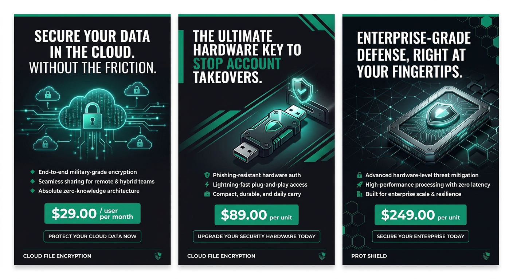

Project overview
A market research, launch and advertising plan for practical encryption solutions for small and medium-sized businesses in Guatemala.
Project presentation video. To use your own, edit VIDEO_URL in js/project.js.
Why encryption is a business worth watching
Guatemalan SMEs are moving online fast, and security is becoming the thing that holds them back.
of SMEs make over half of their sales through digital channels
consider digital payments important for daily operations
reported a cybersecurity incident in the previous 12 months
said security concerns slowed or stopped digital adoption
Incidents are common
Four in ten SMEs already had an incident in the last year.
Fear slows digital sales
Security worries are delaying tools and payments that would help businesses grow.
Small teams, big data
Owners and managers need reliable protection without a large in-house security team.
Support and renewals
Maintenance, technical support and license renewals create recurring income.
Who we sell to
SMEs in Guatemala that manage customer, financial, employee or operational data. Pick a segment to see how prot fits.
Competitor landscape
Each competitor covers a different slice of security. Select one to see where it fits.
Other local IT integrators may also compete indirectly by bundling security products with general IT services. Coverage is based on each company's public product pages.
Our competitive edge
Accessible options
Clearly explained products with options for smaller budgets, not an enterprise-only approach.
Local guidance in Spanish
Technical support and advice from a team that understands local businesses.
Proven standards only
We use established, well-reviewed cryptography instead of untested proprietary algorithms.
Launch priorities
A focused start, built on trust and recurring relationships.
Curated range
A small, carefully selected product range backed by supplier agreements.
Consult and demo
Consultations and demonstrations to find each customer's real needs.
Build trust
Transparent specifications, clear limitations and responsive support.
Recurring revenue
Maintenance, technical support and license renewals.
Sources
